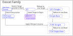
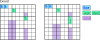
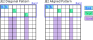
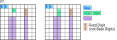
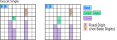
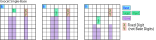
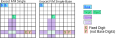
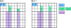

Exocet Family
Junior Exocet(JE2) is an Exocet that restricts Target location to a Band.
JE1, Single-Base is a case that restricts the Target of JE2.

(1) Exocet
(Senior) In Exocet, there are no restrictions on the target's location.
This type is the standard form of Exocet. The SLine is on the Close-Line of the Target.

(2) JE2
Junior Exocet is a type that limits two Targets to within the Band.
There are two types of target cell placement: staggered type and aligned type,
where the cells are in the same row (column).
The conditions and analysis logic for these types are the same, so don't worry too much about it.

(3) JE1/Exocet_Single
JE1 is a type of JE2 where one of the Objects is a fixed number with two cells that are not the Base.
Exocet_Single is a type where the Object is outside the Band.
This is a side branch of the Exocet family of algorithms, and it uses special candidate digit(wildcards).


(4) Single Base
Single Base is a JE1 with one base cell.

(5) F/M Single, Singlr_Base
CrossLine and SLine are Single, Singlr_Base of Franke/Mutant type.

(6) JE2+,JE2++ (ver.6.1-)
There are two types of JE2: one where one of the Targets is two cells (JE2+), and one where both targets are two cells (JE2++).
The Exocet Locked constraint occurs when the Base candidate digit is in the Object (two cells).
The definitions of Cross-Line and SLine are the same.
